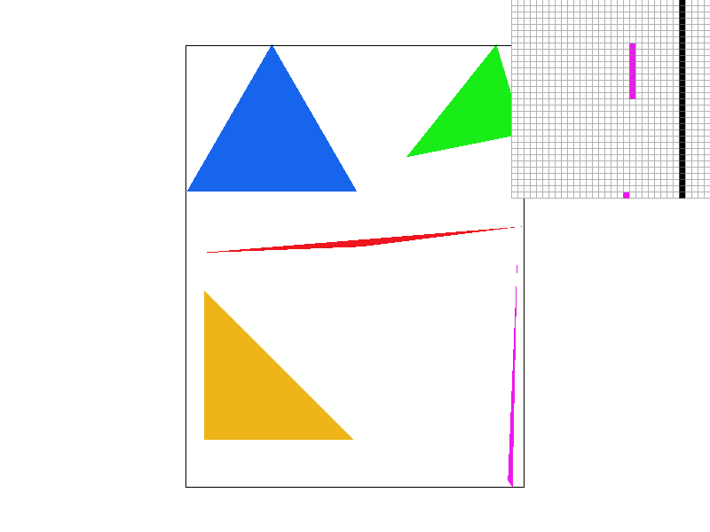
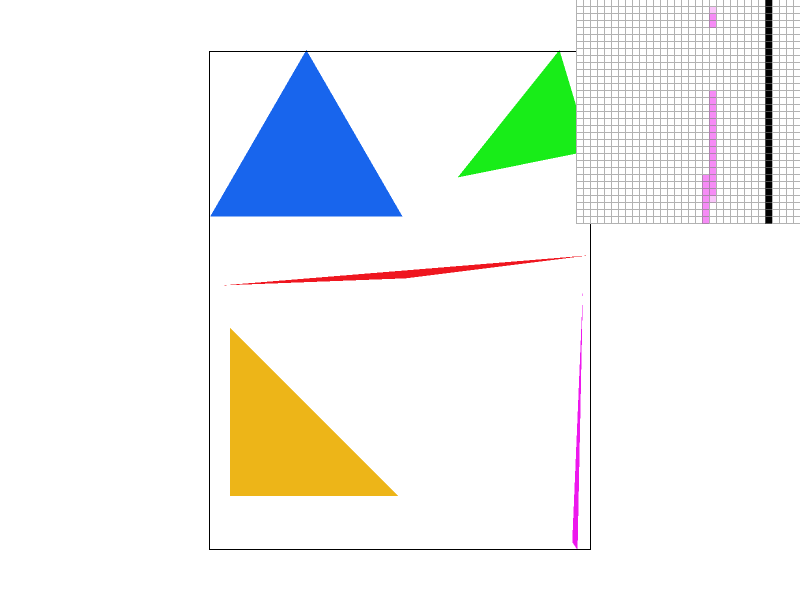
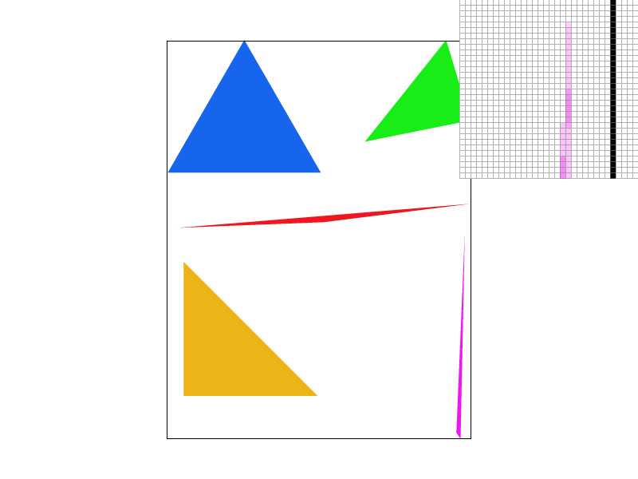
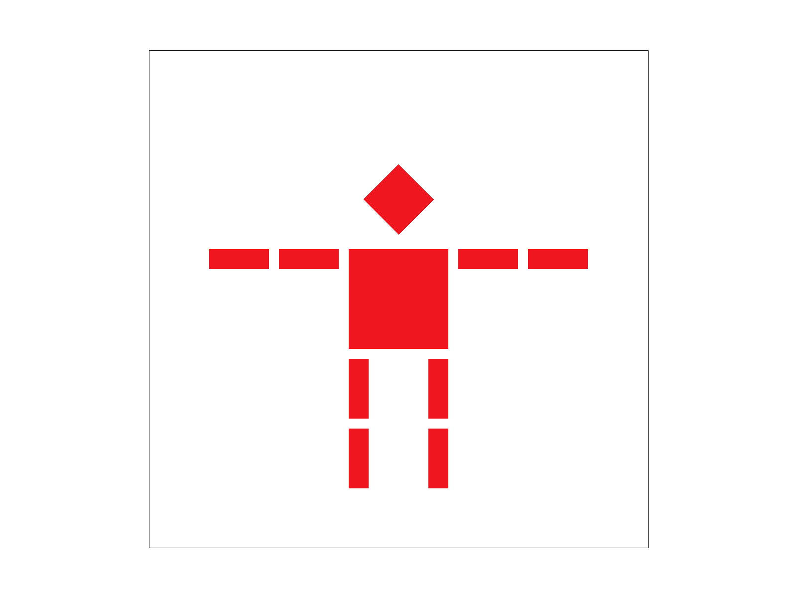
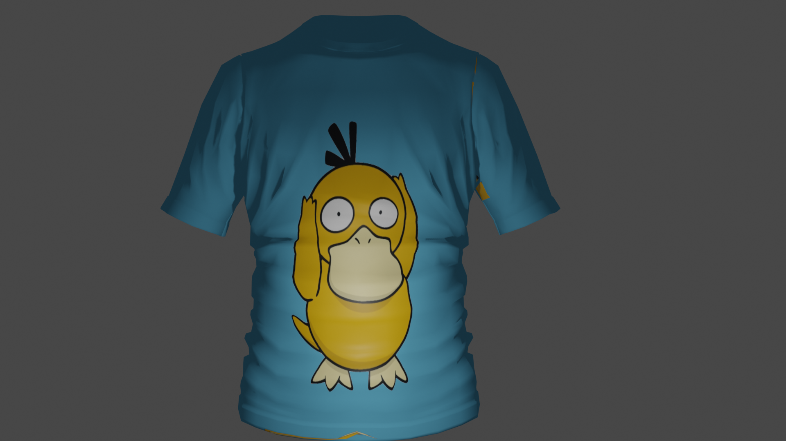

Hi!
I am a student at University of California, Berkeley majoring in Data Science and minoring in Computer Science .
I am passionate about the intersection of technology and art. Specifically, I hope to learn more about the field of Computer Graphics and one day be able to contribute to the community. I also want to contribute to making STEM more accessible for people from all walks of life.
I'm a cap fanatic, dog lover, and audiophile. The chance of anyone seeing me not listening to music is almost negligible.
Here is a more formal resume.
What I Do
Joint Interactive and Procedural Modeling of Free-Forms Shapes in JIPCAD
I work as a Research Apprentice for JIPCAD. JIPCAD is a software that hopes to help fill the hole of modeling mathematical knots and other models that are hard to model in current 3D software. My role is to be a user of JIPCAD and determine any bugs or possible improvements to the current software. In the future, I hope to help with the implementation of the GUI.
Rasterizer
The goal of the project is to create a simple rasterizer that can take in simplified version of SVG(Scalable Vector Graphics). The features we focused on implementing are drawing triangles, supersampling, hierarchical transforms, and texture mapping with antialiasing. We are currently done with most of these features and examples are shown below.
    Project Specifications
Project Specifications
Blender Projects
I recently started to learn blender and have made a few projects utilizing the tools. I hope to continue to learn more and create more detailed scenes in the future with my own objects.
Computer Science Mentors: Senior Mentor
CSM is a student-run organization that hopes to provide more support to those taking CS lower division courses which have roughly ~1000-2000 students a semester. As a SM, I hold biweekly sections to help ~6 students on reviewing/gaining clarification on the previous week's content. I also hold weekly meetings with current Junior Mentors to provide guidance in teaching students. The class that I help my students with is CS 70 (Discrete Mathematics and Probability Theory.
CS 70 Academic Intern
CS 70 is Discrete Mathematics and Probability Theory. I am part of course staff as an Academic Intern this semester. My role is to provide students with support during discussion sections.
SWE++
SWE++ is a committe under the Society of Women Engineers that strives to give local middle school girls access to the field of computer science and inspire them to pursue computer science as a career. I recently joined the committe and hope to help provide fun applications of CS for my students.
What I've Done
Penguin Tournament
The goal of the project was to organize the penguins into teams with the least amount of disputes among them. The penguins were representented as vertices while the disputes were represented as weighted edges. Utilizing the different algorithms we learned in the course, we had to design a way to create a graph with the smallest number of edges with small weights.
Project SpecificationsThe Pacman Projects
The goal of these projects were to utilize the different algorithms and topics we learned on the game Pac-Man. These topics included search algorithms (DFS, BFS, Uniform Cost, etc.), reinforcement learning, Bayes Nets, Hidden Markov Model, and Machine Learning.
Project SpecificationsGitlet
The goal of the project was to implement a version-control system that has the basic features of Git. I created the project from scratch and established a design document to manage the project. Through this project, I was able to gain a clearer understanding on the functionality of Git and starting a project from scratch.
Project SpecificationsOil Defender
The goal of the project was to create a product that would be profitable to the market in China. We decided on creating a more Chinese friendly dishwasher. The design process is documented on our website. Through this project, I was able to learn a process that designers go through to come up with a product.
WebsiteS1XT33N: Voice-Controlled Car
The goal of this project was to make a voice-activated robot. I breadboarded the robot circuit and modified the breadboard for areas that did not meet the design specifications. Through this project, I learned how to breadboard different types of filters that allowed for the car to be voice-activated.
Project GoalsWordguesser
The goal of this project was to create a website that is playable once published. Through this project, I was able to explore the use of Ruby and Cucumber and make a functioning website game.
WebsiteJump 61B
The goal of this project was to program a simpler version of KJumping Cube game (rules are laid out in spec). One requirement of the project was to be able to play against a computer. I developed an AI that could play against a human player. Through this project, I created own tests to ensure code satisfied the rules of the game. To see my code, please email me with a request.
Project SpecificationsEnigma
The goal of this project was to build a simulator for a generalized version of Enigma machines that were used by the Germans during WWII. I designed multiple roters/reflectors to do different permutations required to make a fully functioning enigma machine. Through this project, I was able to execute a functioning enigma machine and utilize different data structures. To see my code, please email me with a request.
Project SpecificationsAnts VS Somebees
The goal of this project was to create a game inspired by Plants vs. Zombies. Through this project, I learned the basics of object oriented programming. To see my code, please email me with a request.
Project SpecificationsCats: Automated Typing Software
The goal of this project was to create a game inspired by Typeracer. Through this project, I learned how to utilize recursion and practice using python. To see my code, please email me with a request.
Project Specifications